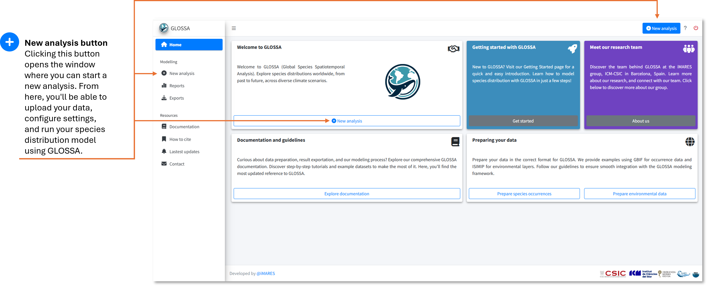
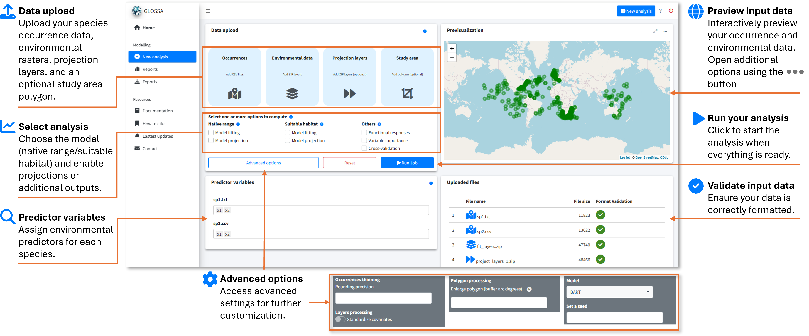
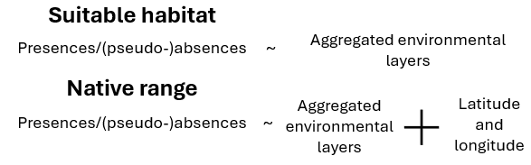
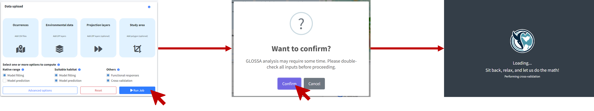
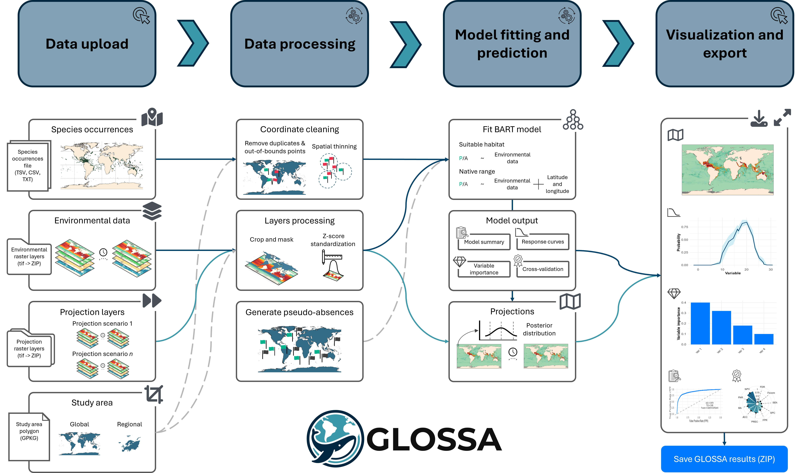

Running a new analysis
In this section, we’ll guide you through setting up and running your first species distribution analysis in GLOSSA. Whether you’re new to modeling or experienced, this walkthrough will help you configure the analysis step-by-step.
Step 1: Launch GLOSSA
After installing GLOSSA, open R or RStudio, load the package, and launch the app:
library(glossa)
run_glossa()This will open the GLOSSA interface in your default web browser, where you’ll start your analysis by clicking the “New analysis” button.

Step 2: Upload your data
In the New analysis tab, you’ll upload your input data. You’ll need the following:
- Occurrences:
- Upload your tab-separated file containing species occurrence data with
decimalLongitude,decimalLatitude,pa(optional), andtimestamp(optional). You can upload multiple files, and each will be analyzed in independent models within the same run. For example, in the figure below, two files (sp1.txt and sp2.csv) for different species were uploaded. The plot on the right shows a preview of the occurrences.
- Upload your tab-separated file containing species occurrence data with
- Environmental data:
- Upload your environmental raster layers as a ZIP file, following the structure described in the Preparing Your Data section. Make sure all rasters have the same resolution and extent. In the figure, we uploaded fit_layers.zip, which contains the environmental data.
- Projection layers (optional):
- If you have future scenarios (e.g., climate change projections), upload your projection layers. Using the fitted model, GLOSSA wil predict using this rasters. You can upload multiple ZIP files with different projection layers, as shown in the figure where proj_layers_1.zip and proj_layers_2.zip were uploaded.
- Study area (optional):
- To limit your analysis to a specific region, upload a study area polygon in GPKG, KML, or GeoJSON format. The previsualization plot will help you check the spatial coverage of the polygon.

Step 3: Configure your analysis
Once the data is uploaded, you’ll configure your analysis by adjusting the following settings:
- Choose a model type:
Native range: Includes both environmental variables and spatial coordinates to predict the species’ native distribution.
Suitable habitat: Uses only environmental variables to predict suitable habitats, ignoring spatial coordinates.

Model fitting: This option fits the selected model, enabling you to compute functional responses and variable importance. It also makes predictions based on an averaged environmental scenario, which is created by calculating the mean values of each environmental variable across all provided timestamps.
Model projection: If enabled, the fitted model will be used to make projections on the uploaded projection layers.
- Other analysis options:
- Functional responses: This option generates response curves, which show the relationship between species occurrence and each environmental variable using partial dependence plots. These plots show the marginal effect of each variable on the predicted outcome of the BART model. Response curves are calculated only for the suitable habitat model without variable standardization, so they can be interpreted on the original scale.
- Variable importance: When selected, variable importance is computed using a permutation-based approach. This measures the change in prediction error after shuffling the values of each variable, using the F-score as a metric.
- Cross-validation: Enables k-fold cross-validation (k = 5) to evaluate your model’s predictive performance. The cross-validation is conducted randomly, without accounting for spatial or temporal blocks or autocorrelation
- Advanced options:
- Occurrence thinning - Rounding precision: Apply spatial thinning to your occurrence data using a precision-based approach. You can specify the decimal precision for latitude and longitude, and GLOSSA will remove duplicate records based on the rounded coordinates.
- Layers processing - Standardized covariates: This option z-score standardizes all environmental variables (subtract the mean and divide by the standard deviation). Mean and sd are computed based on the fitting layers and is also applied to projection layers.
- Polygon processing - Enlarge polygon: If your study area polygon has a low resolution or you want to extend its coverage, you can apply a buffer to enlarge it. The buffer value is specified in degrees, and you can preview the result by clicking the “play” button in the previsualization plot.
- Model: Currently, only the BART model is available for fitting
- Set a seed: Set a seed for reproducibility.
Step 4: Run the analysis
After configuring your settings, click Run Job to start the analysis. A confirmation dialog will appear, prompting you to double-check your input and settings. It’s important to ensure everything is configured correctly since some analyses may take a long time to complete, and you wouldn’t want to realize a mistake afterward.

Once confirmed, GLOSSA will begin the analysis by following these steps:
Data processing: GLOSSA processes your input data, removing duplicate coordinates, excluding records outside the study area, and filtering points with missing covariate values. If spatial thinning or standardization is enabled, these steps will also be applied. If a study area polygon is provided, the rasters will be cropped accordingly. For presence-only data, pseudo-absences will be generated.
Model fitting: GLOSSA fits the BART model using presence/(pseudo-)absence data as the response variable, with environmental variables (for the suitable habitat model) and also geographic coordinates (for the native range model) as predictors. After fitting the model, GLOSSA calculates an optimal cutoff for predicting presence/absence using Youden’s index, also known as the True Skill Statistic (TSS).
Model validation and additional analyses: GLOSSA computes validation metrics such as AUC, a confusion matrix, and the distribution of fitted values. If requested, GLOSSA also calculates functional responses, variable importance, and performs cross-validation to evaluate model performance.
Projections: The fitted models are used to make projections based on the uploaded projection layers. Since GLOSSA operates within a Bayesian framework, it computes a predictive posterior distribution for each grid cell.
Results: Once the analysis is complete, you’ll be automatically redirected to the Reports tab, where you can explore and interpret your results.
This process may take time depending on the size and resolution of your data, the number of projections, and additional options you have enabled (e.g., functional responses, cross-validation).

Conclusion
You’ve successfully run your first analysis in GLOSSA! Now it’s time to explore the outputs and dive into the results. Head over to the next section to learn how to interpret your findings: Explore the results.